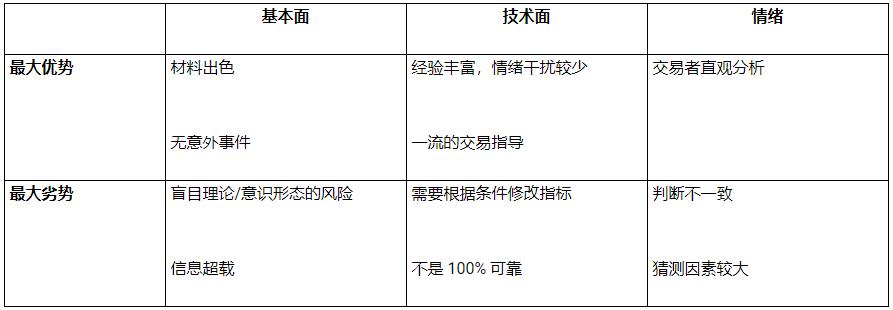

<!DOCTYPE html>
<html>
</html>
<head>
  <meta charset="utf-8">
  <meta http-equiv="X-UA-Compatible" content="IE=edge">
  <title>外汇站（fx-z.com） - 哪种分析方法最好？</title>
  <meta name="description" content="">
  <meta name="viewport" content="width=device-width, initial-scale=1">
  <meta name="robots" content="all,follow">
  <!-- Bootstrap CSS-->
  <link rel="stylesheet" href="vendor/bootstrap/css/bootstrap.min.css">
  <!-- Font Awesome CSS-->
  <link rel="stylesheet" href="vendor/font-awesome/css/font-awesome.min.css">
  <!-- Google fonts - Roboto-->
  <link rel="stylesheet" href="https://fonts.googleapis.com/css?family=Roboto:400,300,700,400italic">
  <!-- owl carousel-->
  <link rel="stylesheet" href="vendor/owl.carousel/assets/owl.carousel.css">
  <link rel="stylesheet" href="vendor/owl.carousel/assets/owl.theme.default.css">
  <!-- theme stylesheet-->
  <link rel="stylesheet" href="css/style.default.css" id="theme-stylesheet">
  <!-- Custom stylesheet - for your changes-->
  <link rel="stylesheet" href="css/custom.css">
  <!-- Favicon-->
  <link rel="shortcut icon" href="img/favicon.png">
  <!-- Tweaks for older IEs--><!--[if lt IE 9]>
    <script src="https://oss.maxcdn.com/html5shiv/3.7.3/html5shiv.min.js"></script>
    <script src="https://oss.maxcdn.com/respond/1.4.2/respond.min.js"></script><![endif]-->
</head>
<body>
  <div id="all">
    <div class="container-fluid">
      <div class="row row-offcanvas row-offcanvas-left"> 
        <!--   *** SIDEBAR ***-->
        <div id="sidebar" class="col-md-4 col-lg-3 sidebar-offcanvas">
          <div class="sidebar-content">
            <h1 class="sidebar-heading"> <a href="https://fx-z.com">fx-z.com</a></h1>
            <p class="sidebar-p">介绍外汇相关的基本知识，告诉您如何进行自己的技术面和基本面分析，讲解先进的交易理念，并且为您阐述失败交易者与专业交易者之间的真正区别。 </p>
            <p class="sidebar-p">通过这些课程的学习，您将学会如何根据自己的优势来应用情绪分析，还将了解真实世界的事件会对货币汇率产生什么影响，央行在外汇市场中所发挥的作用，以及交易者在颇受欢迎的即期外汇交易中有哪些选择方案。 </p>
            <ul class="sidebar-menu">
                <!-- Link-->
                <li class="sidebar-item"><a href="https://fx-z.com" class="sidebar-link">首页</a></li>
                <!-- Link-->
                <li class="sidebar-item"><a href="cihui.html" class="sidebar-link">外汇词汇</a></li>
                <!-- Link-->
                <li class="sidebar-item"><a href="ebook.html" class="sidebar-link">获取外汇电子书</a></li>
            </ul>
            <p class="social"><a href="https://www.cn-forextime.com/zh?partner_id=4920383" target="_blank"data-animate-hover="pulse" class="external facebook"><i class="fa fa-eur"></i></a><a href="https://www.cn-forextime.com/zh?partner_id=4920383" target="_blank" data-animate-hover="pulse" class="external gplus"><i class="fa fa-gbp"></i></a><a href="https://www.cn-forextime.com/zh?partner_id=4920383" target="_blank" data-animate-hover="pulse" class="external twitter"><i class="fa fa-rmb"></i></a><a href="https://www.cn-forextime.com/zh?partner_id=4920383" target="_blank" title="" class="external instagram"><i class="fa fa-dollar"></i></a><a href="https://www.cn-forextime.com/zh?partner_id=4920383" target="_blank" data-animate-hover="pulse" class="email"><i class="fa fa-money"></i></a></p>
            <div class="copyright text-center text-md-left">
             
              
            </div>
          </div>
        </div>
        <!--   *** SIDEBAR END ***  -->
        <!--   *** DETAIL ***-->
        <div class="col-md-8 col-lg-9 content-column white-background">
          <div class="small-navbar d-flex d-md-none">
            <button type="button" data-toggle="offcanvas" class="btn btn-outline-primary"> <i class="fa fa-align-left mr-2"></i>菜单</button>
            <h1 class="small-navbar-heading"> <a href="https://fx-z.com/4-1.html">下一篇 </a></h1>
          </div>
          <div class="row">
            <div class="col-xl-10">
              <div class="content-column-content">
                <h1>哪种分析方法最好？</h1>
       <p>
    每种分析都有优点和缺点。
</p>
<p>
    <strong>基本面分析的优势和劣势</strong>
</p>
<p>
    如果您在基本面分析方面有很深的造诣，则您减少了面临令人反感和不悦的意外事件的几率，例如完全出人意料的央行调息。话虽如此，良好的基本面知识告诉您货币走势应该如何，而不是货币走势最有可能如何。正如基本面课程中所述，我们对汇率判定并没有统一的理念，因而很容易得出错误的结论。例如，理论告诉我们当央行提高利率时，货币应该会下跌，因为整个经济的本金加利息应该守恒。但守恒显然没有发生，至少最开始没有发生，因为加息可以吸引资金流，资金通常会上涨，而不是下跌——守恒仅限于两种货币国的所有其他条件相同时。
</p>
<p>
    由于汇率判定有许多相关的理念流派并且受到政治、投资环境以及其他外部变量（包括商品价格）等定性因素的影响，基本面分析更应该说是一种艺术，而不是科学。而且我们的信息严重超载。每个经济体的信息都太多，以至于无法将它们全部记录下来。因此，我们对有时间关注的信息进行编辑和显示，而且冒险错过了一些曾经平淡无奇的重要信息；更重要的是，我们只查看理论及意识形态让我们关注的内容。如果不在理论框架中加入这些观察，这些信息可能非常难以发现（如果有可能发现的话）。根据经常被引用的 John Maynard Keynes 理论：
</p>
<p>
    相信自己可以免受任何知识影响的实干家通常是一些已故经济学家的奴隶。
</p>
<p>
    货币政策课程中有一个很好的示例——大部分基本面分析师预测美国、英国将由于量化宽松政策而无可避免地出现通胀，却忽略了一个事实：您可以大量增加货币供应，但如果央行保持货币不外借，您既不会见到经济增长，也不会见到通胀。这种理论并非完全错误——从历史上来看，货币供应量的增长与通胀的上升密切相关，但这种相关性仅限于货币流动速度保持正常的非危机情况下。明智的基本面分析师可以发现流通速度接近于零，并且准确地判断出不会出现通胀，但这对外汇交易决策并无用处——美元上涨的原因有很多，其中之一是即将到来的通胀预期，即使相关分析只是错误的信息。
</p>
<p>
    如果您花时间进行基本面分析,您将获得额外优势——有时,您可以将了解到的经济和金融世界的运作方式应用到其他非交易方面。例如：大公司开始在水下物业市场抄底以囤积物业。现在是时候买入大型房产公司未出手的超级便宜的沉船，然后进行改造并租赁出去。大型公司已经为您做好分析——所有权长期减少，租赁需求旺盛。
</p>
<p>
    <strong>分析类型的比较</strong>
</p>
<p>
    
</p>
<p>
    <br/>
</p>
<p>
    <strong>技术面分析的优势和劣势。</strong>
</p>
<p>
    技术面分析的主要优势在于，它建立在经验丰富的观察基础之上，因而可以避免基本面分析师的理论/意识形态问题，即便有些以技术面为主导的理论同样不靠谱。例如，我们利用随机震荡指标来判断一种货币是否被超买或超卖。但在一些特殊情况中，当大型趋势形成时，随机震荡指标给出超卖信号，因此待定数周或数月的逆转将随之结束。随机震荡指标的有用性在长期趋势中趋于失效。实际上，所有随机震荡指标都被限定在 0 到 100 的范围内（或具有一些变化)，因而并不是适合长期趋势的指标。但分析师可能青睐随机震荡指标的有效性，进而忽视这种劣势。
</p>
<p>
    技术面分析的另一项重要优势是它可以减少情绪干扰。您可能认为从经济层面而言，日元过于强势并不公平，但如果您的指标告诉您这是趋势，您需要遵守它们才能成为一位成功的交易者。与令人困惑的基本面相比，您从技术面获得的交易指导更加优秀。
</p>
<p>
    话虽如此，所有技术面分析都是基于以往的价格动向，因此它没有真正的前瞻型指标。我们认为有些指标具有预测能力，但那是因为我们也认为交易者会重复其行为。但是，交易者行为并非总是以相同的方式重复。例如，当价格跌至颈线以下时，这验证了一个双重顶形态；此时，我们预计交易者——他们也注意到我们发现的这个双重顶——将在颈线被突破时卖出。这可能发生在大多数情况中，但不是所有情况中，而且从颈线的下跌幅度可能不大，并非我们预计的平均幅度。如果有一些其他技术面指标（例如斐波那契序列或止步于前一个主要低点的价格跌势）先于双重顶给出信号怎么办？
</p>
<p>
    或许技术面分析最糟糕的方面在于，我们没有关于任何市场中任何指标的可靠数据。您将在特定市场的特定时段内见到可靠数据，但您必须认同，这些数据的可靠性将在下一个时段发生变化。它们在不同市场内的表现也不同。适合石油期货市场的数据不适合股指期货或 USD/JPY，适合当前行情的数据不适合明年的行情。
</p>
<p>
    <strong>情绪分析的优势和劣势</strong>
</p>
<p>
    与技术面和基本面分析相比，乔治·索罗斯 等经验丰富的成功交易者更偏好情绪分析，因为情绪分析直接与引起后续价格变动的交易者心理相关。如果您能够定义出哪些因素对大多数交易者预期的影响最大，您就可以猜出他们对市场的影响方式。无论交易者的分析是对是错，情绪分析的核心都是预期。
</p>
<p>
    用于情绪分析的工具包括数据挖掘（例如查询一个词汇在新闻中被提及多少次）、信息统计（例如交易者持仓报告和其他持仓数据）以及由官方公布的可能用于刻意误导的评论等。例如，欧洲央行行长德拉吉曾表示，如果通缩确实发生，欧洲央行政策委员会将采取一切可能措施来控制通缩；市场有一次对他的话一笑置之，而另一次对他的话严肃待之。这两次，德拉吉都提到他认为通缩迹象是一种异常现象，但第二次，他还提到委员会讨论了 QE 和其他方案。在德拉吉这两次政策会议演讲之间，德国央行行长提到他不再反对 QE。交易者这两次的反应是不同的。第一次，QE 还很遥远。第二次，QE 不再遥远。交易者的情绪从“QE 绝不可能”转换为“QE 或有可能”。这并不代表大多数交易者相信欧洲央行是 QE 的启动者。它意味 QE 风险从零上升至 50% 或其他数据，导致做多欧元的交易者减仓。精明的交易者已经在德国央行发布评论之后减仓；如果德拉吉重复 QE 论调，他们还准备做空。
</p>
<p>
    这种机构变化让人联想到索罗斯 1992 年的事迹。通过基本面分析，他认为欧洲汇率机制中英镑对德国马克的汇率过高。他直接前往英国和德国并与两国高层人士会面。他究竟想知道什么呢? 他不是要了解央行是否会为了保持 GBP/DEM 汇率而采取干预措施，而是要了解德国是否会牺牲它的自身利益并允许利率趋同以减轻英镑的压力。离开时，索罗斯获得两条至关重要的见解。第一，德国不会为了其他国家而牺牲本国目前的政策；第二，官员们并不在意市场的反应，或者说，如果他们在意，他们并不认为未来剧烈的汇率变动足以改变货币政策。
</p>
<p>
    智者索罗斯于 20 年前“打垮英格兰银行” 的事迹依然是外汇行业中最惊心动魄的故事，并且成为了将情绪分析应用于真实交易的最佳范例。索罗斯准确地猜测到，一旦交易者发现英国由于经济原因而需要改变利率而且这样做一定会危及 GBP/DEM 汇率，交易者将推动和刺激英镑，进而制造一场危机。交易者开始刻意考验英镑对德国马克的汇率变动幅度是否能在两国经济出现分歧时保持稳定。索罗斯正确判断出交易者总是喜欢考验一种固定的汇率，而且发现了在这种情况下即将出现的交易者情绪——即考验汇率。他还准确地认识到，一旦汇率变动获得了一些动量，将有更多的交易者涌向英镑做空交易；这为他带来了率先获取巨额利润的机遇。根据当时的报道，索罗斯的盈利超过 10 亿美元（除了索罗斯本人以外，无人知道确切的金额）。
</p>
<p>
    1992 年的事件完美展现了如何通过了解基本面和利用机构因素来创建情景，并且基于对交易者的深度了解而对该情景投注。还要提到的一点是，当这种价格动向获得动量时，任何关注图表的技术面分析师都有可能在毫无技术面或情绪提醒的情况下加入这一行列。
</p>
<p>
    没有哪种分析一定优于另一种。有时间和精力的交易者可以通过自学来熟悉以上三种分析类型。您可以单独利用一种分析类型（例如技术面）来交易，但同时掌握三种分析类型可以降低您的风险。索罗斯的成功始于基本面分析，但许多分析师也持有与他相同的观点。让索罗斯从交易人群中脱颖而出的是，他能发现一次小幅推动将引发大幅推动，进而引发一场海啸。
</p>
<p>
    <br/>
</p>
<p>
    <br/>
</p>
              </div>
            </div>
          </div>
        </div>
      </div>
    </div>
  </div>
  <!-- JavaScript files-->
  <script src="vendor/jquery/jquery.min.js"></script>
  <script src="vendor/popper.js/umd/popper.min.js"> </script>
  <script src="vendor/bootstrap/js/bootstrap.min.js"></script>
  <script src="vendor/jquery.cookie/jquery.cookie.js"> </script>
  <script src="vendor/owl.carousel/owl.carousel.min.js"></script>
  <script src="vendor/masonry-layout/masonry.pkgd.min.js"></script>
  <script src="js/front.js"></script>
</body>